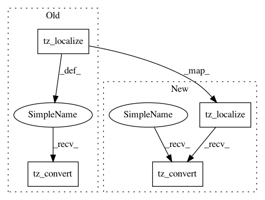

6896d849c5283dce0a8a3924edf635766064f42a,nilmtk/utils.py,,tz_localize_naive,#,244
Before Change
if pd.isnull(timestamp):
return pd.NaT
else:
return timestamp.tz_localize("UTC").tz_convert(tz)
def get_tz(df):
index = df.index
After Change
return pd.NaT
if timestamp_is_naive(timestamp):
timestamp = timestamp.tz_localize("UTC")
return timestamp.tz_convert(tz)
def get_tz(df):
index = df.index
In pattern: SUPERPATTERN
Frequency: 3
Non-data size: 4
Instances
Project Name: nilmtk/nilmtk
Commit Name: 6896d849c5283dce0a8a3924edf635766064f42a
Time: 2014-12-01
Author: jack-list@xlk.org.uk
File Name: nilmtk/utils.py
Class Name:
Method Name: tz_localize_naive
Project Name: cuemacro/finmarketpy
Commit Name: d13c77e3691795824dd342bb2906c2df56eeb26b
Time: 2015-12-10
Author: saeedamen@hotmail.com
File Name: pythalesians/timeseries/calcs/timeseriestimezone.py
Class Name: TimeSeriesTimezone
Method Name: convert_index_from_UTC_to_london_time
Project Name: cuemacro/finmarketpy
Commit Name: d13c77e3691795824dd342bb2906c2df56eeb26b
Time: 2015-12-10
Author: saeedamen@hotmail.com
File Name: pythalesians/timeseries/calcs/timeseriestimezone.py
Class Name: TimeSeriesTimezone
Method Name: convert_index_from_UTC_to_new_york_time